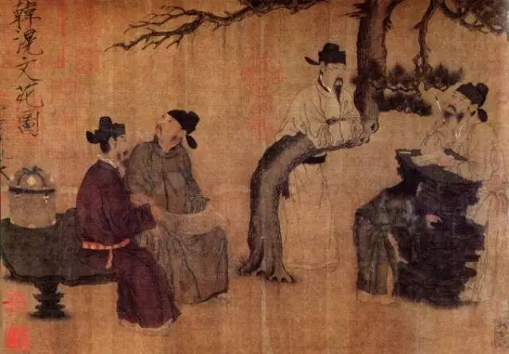
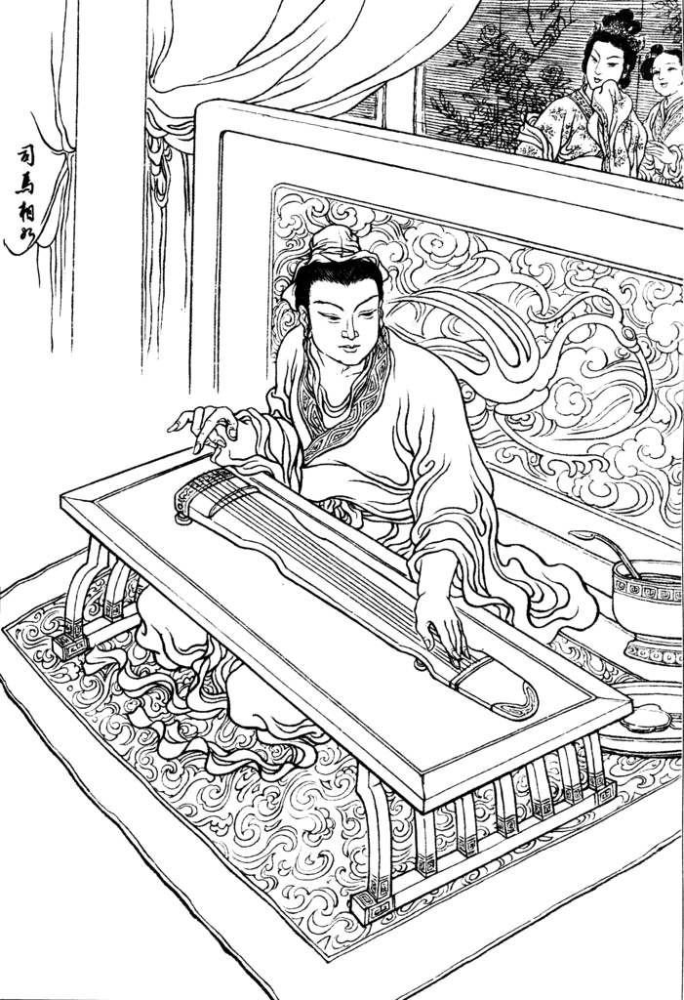

古代也有自媒体？“打赏”还很丰厚！
 182
182

在中国古代，尽管没有自媒体一说，但以类似手段谋生的人并不鲜见。如果穿越到古代，如何玩自媒体？从史料来看，比现代要潇洒多了！
如今，一个尚未来得及收入《汉语大辞典》的新词儿——“自媒体”大热，由此产生一大批“自媒体人”。在中国古代，尽管没有自媒体一说，但以类似手段谋生的人并不鲜见。如果穿越到古代，如何玩自媒体？从史料来看，比现代要潇洒多了！
汉代玩自媒体靠“打赏”
早在先秦时，中国的文化消费已初露端倪。到了秦汉时，凭创作能力吃饭已不再是难事，能写的人在汉代很好混，“汉赋”的出现和兴起便是一个证明。
在汉代，宫廷文学侍从官得到重视，朝廷往往向民间征诏“笔杆子”，优秀的还给官当。贾谊、司马相如、扬雄、东方朔、枚皋、张衡、蔡邕这些汉代词赋名家，当初都是这样的“笔杆子”。可是，古代既没有稿费制，更无广告分成一说，玩自媒体靠什么获取报酬？可以靠“打赏”获得报酬，成语“一字千金”便因打赏而来。
贾谊
首开打赏先河的是汉代，如汉代四川才子王褒便屡被打赏。据《汉书·王褒传》，王褒文章文采飞扬，汉宣帝刘询听说后，将他征招入京，常将他和张子侨俩人带在身边，“所幸宫馆，辄为歌颂。”但文章并不是白写的，汉宣帝会根据文章的质量进行打赏，即所谓“第其高下，以差赐帛”。
之后，打赏模式便流行开来，并成为古代创作者重要的收入来源。三国时，邯郸淳创作了一篇《投壶赋》，献给魏文帝曹丕，曹丕认为写得好，“赐帛千匹”。《投壶赋》总共才一千多字，几乎一字一匹。
南北朝时打赏更成为一种文人雅趣，爱好文学的南朝梁简文帝萧纲最爱打赏。据《南史·简文帝纪》，萧纲“弘纳文学之士，赏接无倦”。
到唐代，打赏数额越来越大，成为原创的一大动力。著名书法柳公权不仅字漂亮，诗文写得也好。据《唐摭言》，唐武宗李炎对一名后宫妃子很生气，找来柳公权，说如能得到你的一篇诗文，我就不怪她。柳公权很快成诗：“不忿前时忤主恩，已甘寂寞守长门。今朝却得君王顾，重入椒房拭泪痕。”李炎很欣赏这首诗，“赐锦彩二十疋”。
被打赏不仅可以获得报酬，还是一种荣誉，武则天曾弄出一个收回打赏的笑话。当年，武则天游龙门，命令随从文人即景作诗。左史东方虬诗先写好，武则天觉得不错，赏赐他一件锦袍。再看宋之问随后呈上来的诗更好，武则天便从东方手中夺回锦袍，转而赏给宋之问，此即唐胡璩撰《谭宾录》中所记“夺袍以赐之”。
宋朝玩自媒体有“稿费”
宋代时，现代已很流行的稿费制已出现，在打赏外，自媒体人又多了一条创收的渠道。
稿费在古代通称“润笔”，润笔隋唐时已有。“润笔”一词最早即出现在隋代，《隋书·郑译传》记载：隋文帝杨坚令内史令李德林立作诏书，名臣高颎与一旁的郑译开玩笑说“笔干”。郑译答道：“出为方岳，杖策言归，不得一钱，何以润笔。”从此，“润笔”成了创作者应得报酬的专用语。
在唐朝，不少文人已能获得很高的润笔。如当时文化名人韩愈、李邕等通过为人撰写碑文便可拿到巨额稿费。尤其是韩愈，他最擅长写墓志、碑文，高的话一篇碑文就能拿到“（黄）金数斤”，时人曾讥之为“谀墓金”。看来，为了拿到润笔，韩愈在志文中未少用阿谀奉承之词。其实，“谀墓受金”韩愈并非第一人，这一词最早使用在东汉末文人蔡邕的身上，由此可见，润笔早在汉代即已存在。
尽管润笔在中国出现时间较早，但一直到宋代才成为一种定例，出现类似于现代稿费制的“润笔制”。这一定制首先从宫廷开始，即便公务员写作文书，都有相应的润笔。沈括《梦溪笔谈·故事二》中对此有详细记载：“内外制凡草制除官，自给谏、待制以上，皆有润笔物。太宗时，立润笔钱数，降诏刻石于舍人院。每除官，则移文督之。在院官下至吏人院驺，皆分沾。元丰中，改立官制，内外制皆有添给，罢润笔之物。”
当然，所得润笔不一定就是现金，有的可能是实物。据元盛如梓《庶斋老学丛谭》，绍兴十四年（公元1155年），宋高宗赵构一次给王公伦“润笔万缗，赐砚尤奇”，只因他为赵构所宠后宫刘婉仪草拟的进位贵妃诏书“有典诰体”。
润笔制流行后，在古代玩自媒体就有了一个相对稳定的收入来源，到明清时，写稿取酬方式已与现代差别不大，并成为文人收入的重要来源。据清宋起凤《稗说》，明后期文人陈继儒便靠稿费成为一方富翁，“四方征其文者，束帛挺金造请无虚日，以润笔之资卜筑余山。”
明清玩自媒体“写软文”
“写软文”被一些现代媒体人视为一种心照不宣的创收手段，殊不知古代文人，尤其是出名文人早就开始玩这一套了，到明清时手法已颇老道。
所谓“软文”，就是根据对方需要而创作、发布的形象宣传、广告、美言性质的文章。古代最早最出名的一篇“软文”，大概是出自汉代才子司马相如之手的《长门赋》。司马相如本人也没有回避此事，他在序中有如实交代：“孝武皇帝陈皇后，时得幸，颇妒。别在长门宫，愁闷悲思。闻蜀郡成都司马相如天下工为文，奉黄金百斤，为相如、文君取酒，因于解悲愁之辞。而相如为文以悟主上，陈皇后复得亲幸。”

司马相如
这序所写的大概意思是，汉武帝刘彻的陈皇后失宠，被贬入长门宫。听说司马相好如文章写得好，便用一百斤黄金，请司马相如为她作辞赋一篇，司马相如答应了，这就是著名的《长门赋》。刘彻看到《长门赋》后醒悟过来，陈皇后重新受宠–即此后世文人津津乐道的“千金买赋”故事。有学者认为，陈皇后的“黄金百斤”是中国最早一笔润笔费。
明清时，“写软文”者越发多了起来，有的人还有意揣摩对方的心思，主动寻找金主，作文示之，不愁搞不到钱。据裘毓麐《清代轶闻》“廿八字易百金”条，晚清大臣端方被廷议削职后，某朝士献诗：“高庙何曾盗玉环，长陵坏土稳如山，汉家若用张廷尉，定把无名法令删。”这诗明显是为端方开脱的“软文”，端方看到后十分高兴，于是“赠百金”。
古代自媒体“创收”五花八门
古代万人创收的花样还有很多。除了传统的打赏、稿费，还可以直接“卖文”、代人“捉刀”、“卖版权”，等等。
卖文，属于中国古代文人常规谋生手段。由于文学消费市场的形成，在唐代时卖文已很活跃，“初唐四杰”之一的王勃就靠卖诗文发财的。据元辛文房《唐才子传》，“勃属文绮丽，诸者甚多，金帛盈积。”王勃“心织而衣，笔耕而食”，完全是靠一支笔吃饭，被视为中国古代卖文为生第一人。此外，南宋时还出现了卖文明码标价的现象。据宋人胡仔《渔隐丛话》，有个叫仇万顷南宋文人，便曾“尝挈牌卖诗，每首三十文”。
到明清时，文学消费不只是上层人士的习惯，连普通人都会买文，随之出现了一批“职业卖文者”，这些人可以视为中国古代真正的自媒体人。明代文人屠隆，就是“卖文为活”的代表人物之一。《明史·屠隆传》记载，屠隆“纵情诗酒，好宾客，卖文为活。诗文率不经意，一挥数纸”。
在清代，不少文人退休以后，也往往卖文创收。清代学者包世臣，晚年回到南京后，便“裹足不出城闉，惟以卖文字自给”。替人写诗文，即所谓“代人捉刀”，收受馈金，在清代更不少见，这实乃卖文的另类方式。有的土豪为装点门面，甚至常年雇捉刀人在家。据《清朝野史大观》“书契圣手”条，“往时官场承平之际，上下皆重文字。凡贺禀贺启，皆骈俪绝工，一记室修有干金者。凡才学之士，得以遨游公卿得高价。”由于有钱可赚，当时一些文化名人也甘当“捉刀人”。
明清时出版市场已很繁荣，版权意识形成，小说、话本一类的通俗作品广受读者青睐，书商出现。许多文人干脆做起专业作家，以出售书稿版权为生。据《清代轶闻》，清代学者王士桢便曾想以三千金买下蒲松龄的《聊斋志异》书稿，出版发行。
最后值得一提的是，由于诗文买卖活跃，收入不薄，明清时靠抄袭、攒稿、盗版获利已成一害，就如当下不少无良自媒体人一样。
来源：国家人文历史